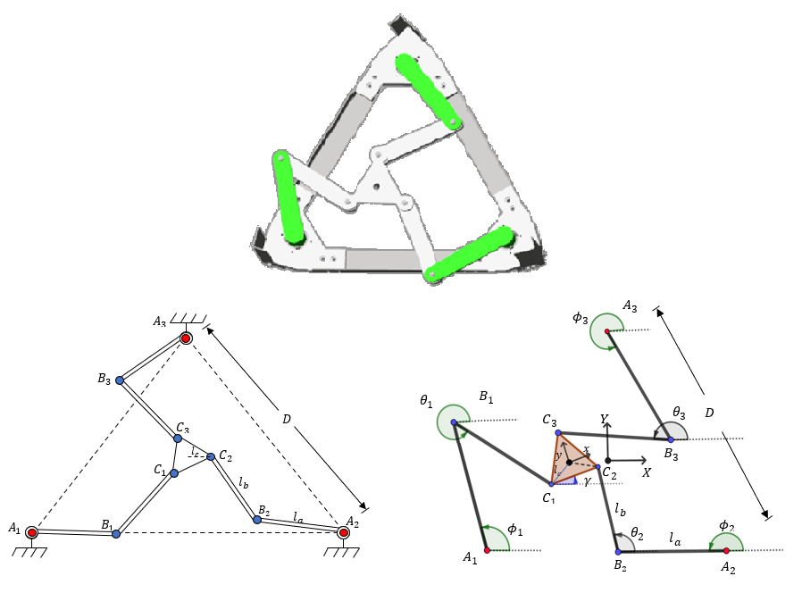
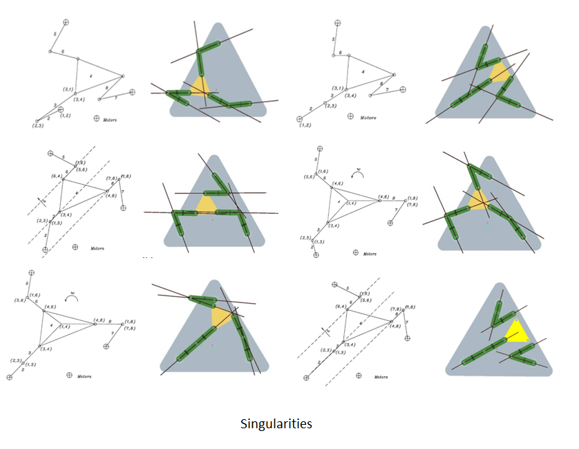
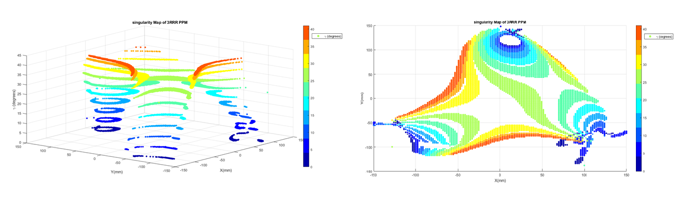
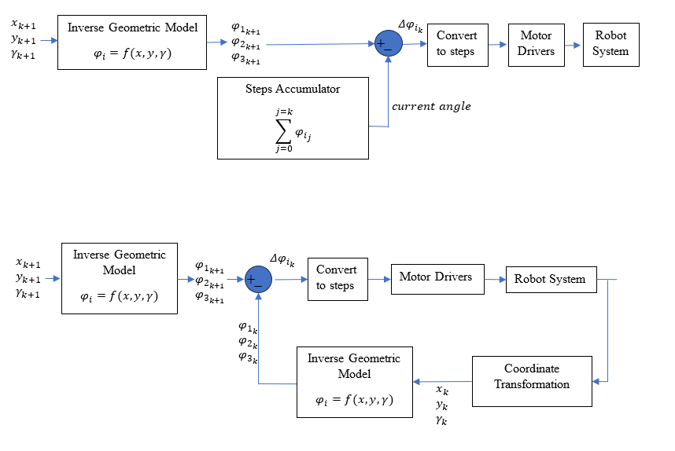
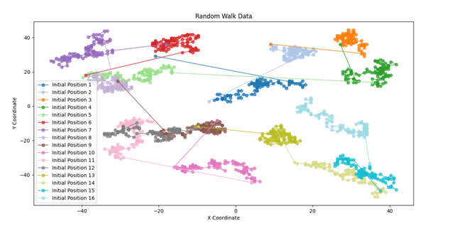
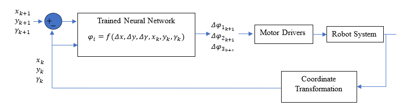
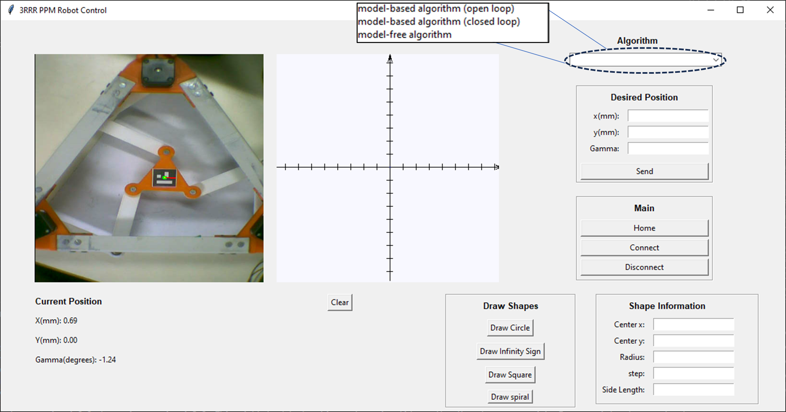
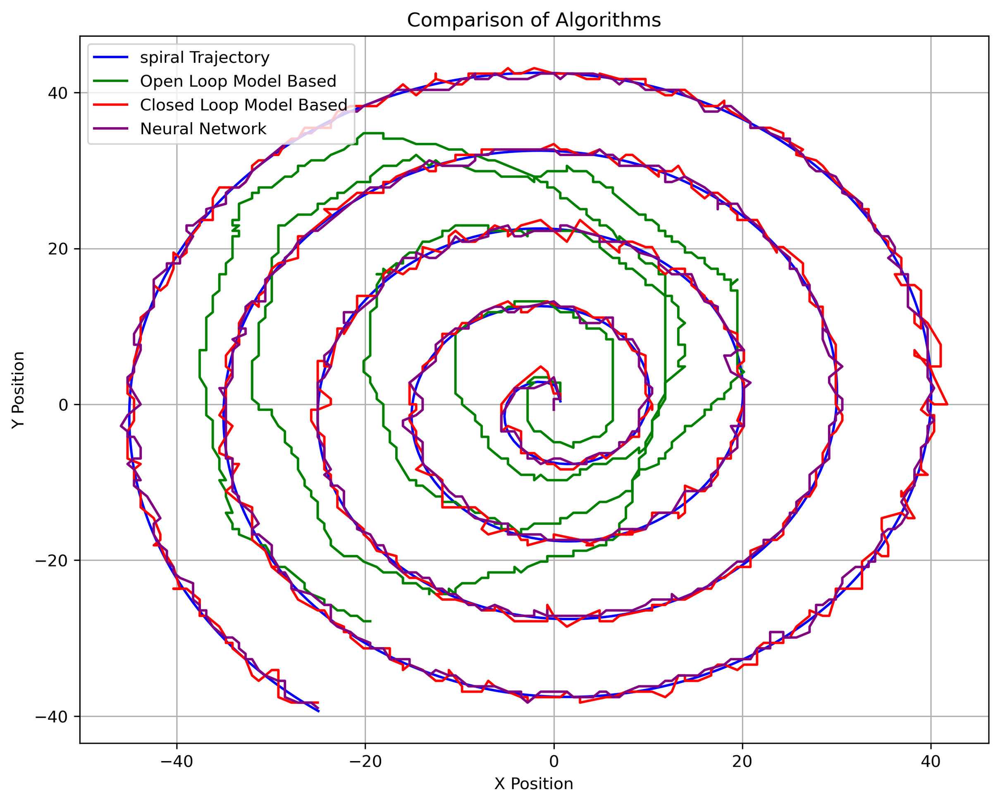
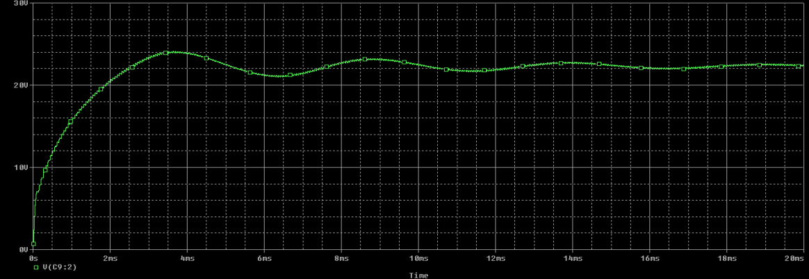
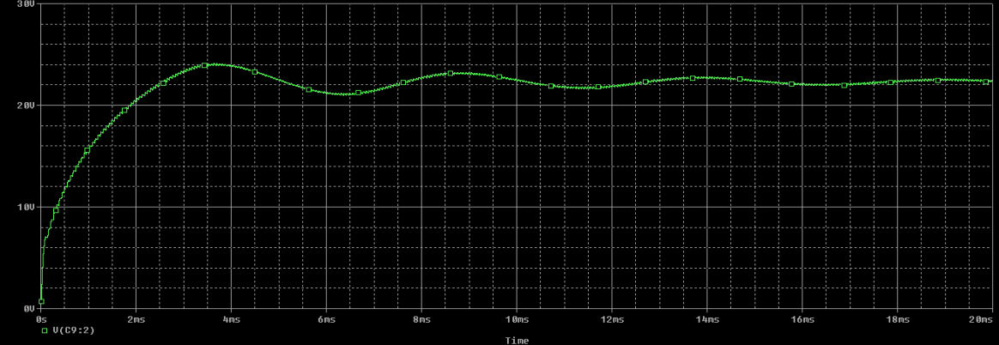

Modeled, analyzed, and controlled a planar parallel manipulator (3RRR PPM) using MATLAB and Python.
Performed singularity analysis on MATLAB and calculated the manipulator’s workspace.
Performed practical comparison of traditional control methods
(open loop, closed loop) and data-driven control techniques to track
trajectories using camera feedback.
The task involved investigating machine learning methods to control a robot.
1. first, it's important to theoretically study the platfrom, including reference framese,
Inverse Geometric Model, and Inverse Kinematic Model of the platfrom.

This is important to identify singularities and get a picture of the workspace.

With the right equations (and of course Matlab) we can easily draw a map of the workspace.

For the Control part, three algorithms were implemented and compared. Two of which are basic traditional methods.

Considering machine learning, A dataset was collected by randomly moving the arms of the robot and tracking
the changes in the end-effector's pose. This is repeated at different locations in the workspcae in a random walk process(for generlization)

After collecting the data, it's time to build our Neural Network Controller.
It's easy to think that the inputs of the controller should be the required change in the end-effector's pose. To say...
The purpose is to map the required change in task space to the corresponding change in joint space. HOWEVER,
because of the nonlinearity of the platfrom, this change may differ from location to another in the workspace.
Adding the current pose of the end-effector to the inputs should handle that.

Hyperparameter tuning (through a random search) was emplyed to optimize the networks's performance.
Experiemental steup:
Three KL17H248 stepper motors with maximum torques of 0.54 Nm drive the active joints
in 1/8 working mode (each step is equivalent to 1.8(deg)/8=0.225(deg).
three A4988 drivers connected to Arduino Uno through a CNC shield are
used to drive the three motors. A computer endowed with a 2.20 GHz
Intel Core (TM) Quad processor performs image acquisition and processing
using a Creative Webcam camera (30 fps) connected to the computer.
The implementation of the different algorithms along with image processing
was accomplished through a python code using OpenCv library which allows for
the detection of the Aruco marker placed on the top of the end-effector. The
computer acquires frames from the camera, connected to it, employing the
OpenCV library. These frames are then subjected to a detection algorithm
designed to identify the position and orientation of the end-effector. The
detected pose of the end-effector is then converted from image reference frame
to the platform reference frame using a linear transformation which is defined
through a calibration process.

A mumber of trajectories were used to evaluate the performance

Lesson learnt: Machine learning methods in control can achieve similar results to
traditional techniques... Of course after all it's all about how you design a control system.
Nevertheless, traditional methods require a model to work... a mathematical model that depends
on the measurments of parameters (like length and mass). measurments' errors can affect the performance though
in model-based methods. While data-driven approaches depend on REAL data that is collected from the REAL Platfrom
with all the noise included. Collecting the data, and building a model, is a different way of control.
This project was Research opportunity as it rised many questions!. Although data-driven methods show
promising experiemental results, How can we ENSURE they work all the time?! a proven mathematical guarantee?!
this question led me to delve into advanecd research like Contraction theory, a topic of onother time.
Another question would be related to the dataset. The neural-network's performance is directly affected by
the quality of the collected data. Shouldn't we find a method that ensures data quality? At least in parallel
manipulators... This question was further discussed in another project.
 
